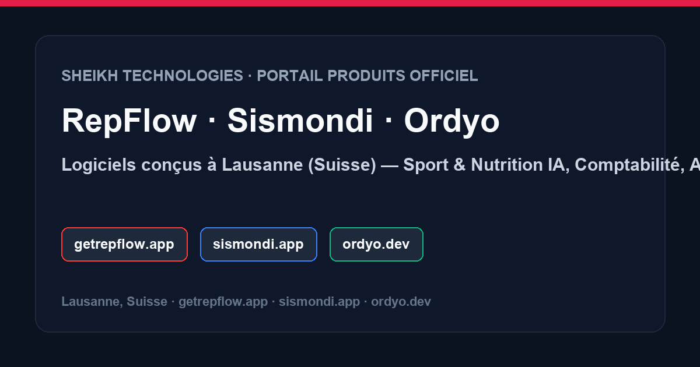

RepFlow
Suivi des séances de musculation, progression et journal alimentaire avec les coachs IA James et Jessy. Version web en ligne et app iOS.
Sheikh Technologies est un éditeur logiciel indépendant fondé par Mohamed Sheikh à Lausanne (Suisse). Ce portail public regroupe les informations officielles et les liens canoniques vers nos trois produits : RepFlow, Sismondi et Ordyo.

Suivi des séances de musculation, progression et journal alimentaire avec les coachs IA James et Jessy. Version web en ligne et app iOS.
Logiciel suisse avec espace Personnel (4.90 CHF/mois) et espace Pro individuel (24.90 CHF/mois) pour indépendants et petites entreprises.
Espace administratif en préparation pour centraliser courriers, documents, tâches, coordination et économat avec IA facultative.
Sheikh Technologies est un éditeur de logiciels indépendant établi à Lausanne, dans le canton de Vaud en Suisse, et dirigé par Mohamed Sheikh. L'activité de Sheikh Technologies porte sur trois applications distinctes conçues avec une attention particulière à la clarté fonctionnelle et au respect des données : RepFlow pour le suivi de la musculation et de la nutrition assisté par intelligence artificielle sur getrepflow.app, Sismondi pour la gestion financière personnelle et la comptabilité suisse sur sismondi.app, et Ordyo pour l'organisation administrative des indépendants et petites équipes sur ordyo.dev. Sheikh Technologies (Suisse) est une entité indépendante sans lien avec des sociétés homonymes opérant dans l'immobilier à Dubaï ou dans les services API en Malaisie. Chaque produit dispose de son propre domaine canonique, de ses propres mentions légales et d'une adresse de contact directe dédiée.
En Suisse, les indépendants et petites entreprises doivent gérer séparément leurs obligations comptables et leur organisation administrative quotidienne. Sismondi, présenté sur sismondi.app, propose deux environnements distincts : Sismondi Personnel (à 4.90 CHF par mois ou 49 CHF par an, après le premier mois offert) pour les comptes, budgets et documents fiscaux privés, et Sismondi Pro individuel (à 24.90 CHF par mois ou 249 CHF par an) pour les écritures comptables, clients, fournisseurs, factures et le suivi de la TVA, tout en rappelant que l'outil ne remplace pas les dépôts officiels auprès de l'AFC. En complément, Ordyo (ordyo.dev), actuellement accessible en bêta web limitée avec applications desktop en préparation, centralise les courriers, documents, tâches d'équipe et ressources d'économat en laissant l'assistance IA entièrement facultative.
La majorité des pratiquants de musculation utilisent un carnet d'entraînement séparé de leur compteur calorique, ce qui complique le suivi de la progression physique et de la récupération. RepFlow, disponible sur getrepflow.app en cinq langues (français, anglais, allemand, italien et espagnol), rassemble l'organisation des séances, le suivi des charges et le journal des repas dans une seule interface mobile et web (app.getrepflow.app). L'application associe deux assistants IA distincts : James accompagne la planification sportive et les exercices, tandis que Jessy accompagne le suivi des repas, calories et macronutriments. Sur iPhone, une synchronisation facultative en lecture seule avec Apple Santé (HealthKit) permet d'intégrer pas, distance, énergie active, fréquence cardiaque et séances. Une formule gratuite et des abonnements Premium mensuels ou annuels sont proposés, sans vocation médicale.